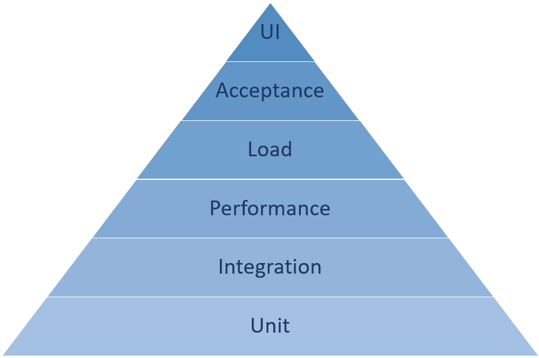

| Тема 1. Различные типы тестирования и пирамида тестирования. | ||
| Назад | ||
|
Тестирование — это проверка программного обеспечения, которая показывает, соответствует ли оно ожиданиям разработчиков и правильно ли работает. Рассмотрим пирамиду тестирования и много типов тестов. Знание того, как разные типы тестов помогают устранять различные недостатки в вашем коде, поможет вам тратить свое время наиболее эффективным образом. Пирамида тестированияВ последние несколько лет пирамида тестирования пропагандировалась как удобный инструмент для объяснения различных типов тестирования и выработки понимания, насколько часто каждый из них встречается в программном обеспечении. Вы можете найти множество различных версий пирамиды тестирования, и ее использование все еще обсуждается, но мы постараемся дать прямое и непротиворечивое объяснение. Основание пирамиды состоит из модульных тестов. Как правило, модульные тесты проще всего писать, проще всего обслуживать по мере изменения кода и быстрее всего выполнять. Для многих пользователей знакомство с тестированием начинается именно с модульных тестов. По мере того как вы поднимаетесь по пирамиде, написание, обслуживание и выполнение тестов обычно становится все более затратным. Тесты вверху пирамиды также имеют большую ценность, хотя их типов заметно меньше. Например, у пользователей обычно больше модульных тестов, чем тестов интеграции, а тестов интеграции больше, чем тестов пользовательского интерфейса.
 Типы тестовСпособы обеспечения высокого качества кода с помощью тестов в отрасли постоянно совершенствуются. Типов тестов больше, чем перечислено здесь, но эти типы тестов являются основными. Возможно, имеет смысл переписать или изменить саму пирамиду тестирования, так как методы и технологии разработки программного совершенствуются по мере углубления нашего осмысления и практики тестирования. Модульные тестыМодульные тесты — это базовые типы тестов, которые составляют основу пирамиды тестирования. Они должны создаваться для одного метода или наименьшей тестируемой единицы кода. У метода может быть много модульных тестов для охвата всех его функциональных возможностей, учитывая диапазон параметров. Эти тесты проще всего написать, а также проще всего отладить, потому что они должны быть самым простым способом проверки части кода, которую они тестируют. Например, предположим, что у вас есть метод, который анализирует почтовый адрес из строки входных данных. Хорошие модульные тесты для этого метода будут вставлять множество различных почтовых адресов, чтобы убедиться, что метод анализирует их правильно, и результат соответствует ожиданиям. Один модульный тест может вставить почтовый адрес из другой страны или региона в виде строки. Другой может вставлять строку со специальными символами, чтобы убедиться, что это не мешает работе средства синтаксического анализа. Модульные тесты должны тестировать небольшие аспекты функциональности приложения, чтобы в случае неудачного завершения теста можно было легко определить, какая функциональность привела к ошибке. Интеграционные тестыТесты интеграции — это следующий этап после модульных тестов в пирамиде тестирования. Они могут охватывать несколько методов или более широкий набор функций, чем модульные тесты. В нашем примере с почтовым адресом тест интеграции может проверять как средство синтаксического анализа почтовых адресов, так и метод для расчета скорости доставки в это местоположение. Такое объединение помогает понять, работают ли несколько частей приложения вместе так, как ожидалось. Тесты производительностиТесты производительности обычно фиксируют время, необходимое для выполнения определенных частей вашей программы. Тесты производительности — это отличный способ перехвата изменения кода, которое замедляет работу приложения. Вы можете устанавливать таймеры в начале теста, которые завершаются только после завершения теста, чтобы выдавать сообщение о сбое теста, если таймер превысит определенное пороговое значение. Нагрузочные тестыНагрузочные тесты во многом похожи на тесты производительности, но больше направлены на использование вашего приложения в большом масштабе. Как приложение справляется, если его одновременно использует 1000 пользователей? 10 000 пользователей? Нагрузочные тесты помогают определить, не замедляется ли ваше приложение при такой нагрузке, или не возникают ли в нем исключения. Приемочные тестыПриемочные тесты помогают получить желаемый для бизнеса результат. Если клиент предоставил вам список критериев для приложения, вы можете написать приемочные тесты, которые могут быть пройдены только при соблюдении всех этих критериев. Приемочные тесты — это еще один способ интеграции спецификации с кодом. Тесты пользовательского интерфейсаТесты пользовательского интерфейса могут напрямую тестировать взаимодействие с пользовательским интерфейсом приложения. Тесты пользовательского интерфейса предназначены для имитации выбора пользователя и взаимодействия с вашим приложением, а также для проверки правильности ответа пользовательского интерфейса. Тесты пользовательского интерфейса находятся вверху пирамиды тестирования. Существует множество платформ, которые могут автоматизировать взаимодействие с пользовательским интерфейсом. Например, Playwright может автоматизировать браузер, чтобы имитировать пользователя, использующего ваш веб-сайт. Другой тип тестирования пользовательского интерфейса — тестирование вручную, когда реальный пользователь использует ваше приложение. Тестирование пользователем приложения перед его выпуском несет в себе как некоторые преимущества, так и недостатки. Этот тип тестирования может оказаться более медленным, так как новому пользователю нужно объяснить, как использовать приложение, а на это нужно время, и к тому же может быть затруднительно повторять каждый раз одни и те же шаги. Основным преимуществом является большая степень уверенности в том, что приложение готово для реальных клиентов, и ничего не было упущено, так как приложение тестировалось не просто автоматически. Этот метод тестирования заслуживает тщательного рассмотрения, прежде чем вы решите его использовать. Легко инвестировать в тесты пользовательского интерфейса, потому что они могут показаться самым прямым представлением того, с чем сталкиваются пользователи, когда работают с вашим приложением. Именно по этой причине в отрасли были быстро приняты тесты пользовательского интерфейса, когда они только появились. Недостаток заключается в том, что пользовательский интерфейс также быстро изменяется, поэтому для всех создаваемых тестов могут требоваться постоянные обновления, даже в случае небольших изменений. Остерегайтесь написания слишком большого количества тестов пользовательского интерфейса, так как могут потребоваться довольно большие затраты на поддержку их актуальности по мере развития вашего приложения.
|
||
| Конспект подготовлен Бакулиным А. М. 2012 год. | ||